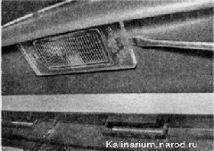
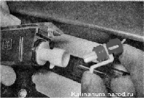
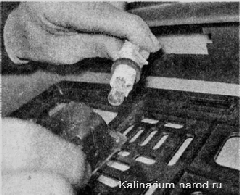
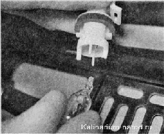

Фонарь освещения номерного знака снятие, замена лампы и установкаПод накладкой двери багажного отделения установлены два фонаря освещения номерного знака. Последовательность выполнения 1. Подготавливаем автомобиль к выполнению работы . Выключаем наружное освещение. 2. Аккуратно шлицевой отверткой отжимаем фиксатор фонаря и извлекаем фонарь освещения номерного знака из накладки двери багажного отделения. При необходимости снять фонарь отсоединяем колодку проводов от фонаря. 
3. Для замены лампы, повернув против часовой стрелки, извлекаем патрон из корпуса фонаря.  4, Извлекаем лампу из патрона и устанавливаем новую.  5. Устанавливаем патрон с лампой в фонарь. 6. Вставляем правую часть фонаря в отверстие двери, а затем нажимаем на левую часть до защелкивания фиксатора. |